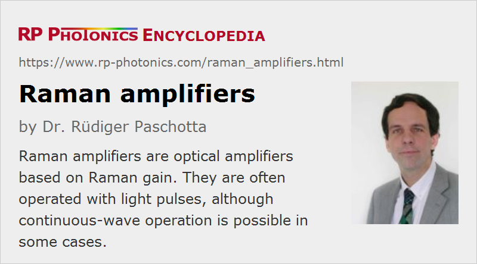

Raman Amplifiers
Definition: optical amplifiers based on Raman gain
More general term: optical amplifiers
German: Raman-Verstärker
Categories: fiber optics and waveguides, nonlinear optics, optical amplifiers, lightwave communications
How to cite the article; suggest additional literature
Author: Dr. Rüdiger Paschotta
A Raman amplifier is an optical amplifier based on Raman gain, which results from the effect of stimulated Raman scattering. The Raman-active medium is often an optical fiber, although it can also be a bulk crystal, a waveguide in a photonic integrated circuit, or a cell with a gas or liquid medium. An input signal can be amplified while co- or counterpropagating with a pump beam, the wavelength of which is typically a few tens of nanometers shorter. For silica fibers, maximum gain is obtained for a frequency offset of ≈ 10–15 THz between pump and signal, depending on the composition of the fiber core.
For application in telecom systems, fiber Raman amplifiers compete with erbium-doped fiber amplifiers. Compared with those, their typical features are:
- Raman amplifiers can be operated in very different wavelength regions, provided that a suitable pump source is available.
- The gain spectrum can be tailored by using different pump wavelengths simultaneously. For example, very broadband amplification – a gain bandwidth e.g. well beyond that of an EDFA – would be feasible with a proper combination of pump sources.
- A Raman amplifier requires high pump power (possibly raising laser safety issues) and high pump brightness, but it can also generate high output powers.
- A greater length of fiber is required. However, the transmission fiber in a telecom system may be used, so that no additional fiber is required.
- Raman fiber amplifiers can have a lower noise figure. On the other hand, they more directly couple pump noise to the signal than laser amplifiers do.
- They also have a fast reaction to changes of the pump power, particularly for co-propagating pump, and very different saturation characteristics.
- If the pump wavelength is polarized, the Raman gain is polarization-dependent. This effect is often unwanted, but can be suppressed e.g. by using two polarization-coupled pump diodes or a pump depolarizer.
A telecom Raman amplifier is pumped with continuous-wave light from a diode laser. Efficient amplification of ultrashort pulses is also possible using copropagating pump pulses. However, the phenomenon of group velocity mismatch then severely limits the useful interaction length, particularly for pulse durations below 1 ps.
Fibers used for Raman amplifiers are not doped with rare earth ions. In principle, any ordinary single-mode fiber could be used, and in practice the transmission fibers themselves are often suitable (→ distributed amplifiers). However, there are special fibers with increased Raman gain, resulting from certain dopants (e.g. germania) for enhanced Raman cross sections, or simply from a small effective mode area. Such fibers are used for lumped Raman amplifiers, where a shorter piece of fiber is dedicated to amplification only.
Suppliers
The RP Photonics Buyer's Guide contains 11 suppliers for Raman amplifiers.
Questions and Comments from Users
Here you can submit questions and comments. As far as they get accepted by the author, they will appear above this paragraph together with the author’s answer. The author will decide on acceptance based on certain criteria. Essentially, the issue must be of sufficiently broad interest.
Please do not enter personal data here; we would otherwise delete it soon. (See also our privacy declaration.) If you wish to receive personal feedback or consultancy from the author, please contact him e.g. via e-mail.
By submitting the information, you give your consent to the potential publication of your inputs on our website according to our rules. (If you later retract your consent, we will delete those inputs.) As your inputs are first reviewed by the author, they may be published with some delay.
Bibliography
| [1] | R. H. Stolen and E. P. Ippen, “Raman gain in glass optical waveguides”, Appl. Phys. Lett. 22, 276 (1973), doi:10.1063/1.1654637 |
| [2] | A. J. Stentz, “Applications of Raman lasers and amplifiers in fiber communication systems”, Proc. SPIE 3263, 91 (1998), doi:10.1117/12.308357 |
| [3] | Y. Emori et al., “100 nm bandwidth flat-gain Raman amplifiers pumped and gain-equalized by 12-wavelength-channel WDM laser diode unit”, Electron. Lett. 35, 1355 (1999), doi:10.1109/OFC.1999.766052 |
| [4] | S. A. E. Lewis et al., “Gain and saturation characteristics of dual-wavelength-pumped silica-fiber Raman amplifiers”, Electron. Lett. 35, 1178 (1999), doi:10.1049/el:19990824 |
| [5] | D. Bayart et al., “Broadband optical fiber amplification over 17.7 THz range”, Electron. Lett. 36, 1569 (2000), doi:10.1049/el:20001078 |
| [6] | V. E. Perlin and H. G. Winful, “Optimal design of flat-gain wide-band fiber Raman amplifiers”, J. Lightwave Technol. 20 (2), 250 (2002), doi:10.1109/50.983239 |
| [7] | V. E. Perlin and H. G. Winful, “On distributed Raman amplification for ultrabroad-band long-haul WDM systems”, J. Lightwave Technol. 20 (3), 409 (2002), doi:10.1109/50.988989 |
| [8] | M. N. Islam, “Raman amplifiers for telecommunications”, J. Sel. Top. Quantum Electron. 8 (3), 548 (2002), doi:10.1109/JSTQE.2002.1016358 |
| [9] | O. Boyraz and B. Jalali, “Demonstration of 11 dB fiber-to-fiber gain in a silicon Raman amplifier”, IEICE Elect. Expr. 1, 429 (2004), doi:10.1587/elex.1.429 |
| [10] | B. Jalali et al., “Raman-based silicon photonics”, J. Sel. Top. Quantum Electron. 12 (3), 412 (2006), doi:10.1109/JSTQE.2006.872708 |
| [11] | Y. Feng et al., “Multiwatts narrow linewidth fiber Raman amplifiers”, Opt. Express 16 (15), 10927 (2008), doi:10.1364/OE.16.010927 |
| [12] | J. Ji et al., “Analysis of the conversion to the first Stokes in cladding-pumped fiber Raman amplifiers”, IEEE Sel. Top. Quantum Electron. 15 (1), 129 (2009), doi:10.1109/JSTQE.2008.2010229 |
| [13] | A. K. Sridharan et al., “Brightness enhancement in a high-peak-power cladding-pumped Raman fiber amplifier”, Opt. Lett. 34 (14), 2234 (2009), doi:10.1364/OL.34.002234 |
| [14] | G. P. Agrawal, Nonlinear Fiber Optics, 4th edn., Academic Press, New York (2007) |
| [15] | ITU standard G.665 (01/05), “Generic characteristics of Raman amplifiers and Raman amplified subsystems”, International Telecommunication Union (2005) |
See also: Raman scattering, Raman lasers, Raman gain, optical amplifiers, distributed amplifiers, fiber amplifiers, fibers, nonlinearities, noise figure
and other articles in the categories fiber optics and waveguides, nonlinear optics, optical amplifiers, lightwave communications
|  |
If you like this page, please share the link with your friends and colleagues, e.g. via social media:
These sharing buttons are implemented in a privacy-friendly way!